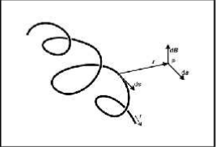
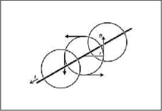
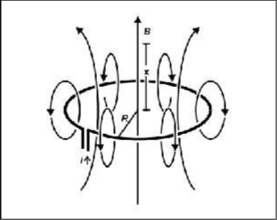
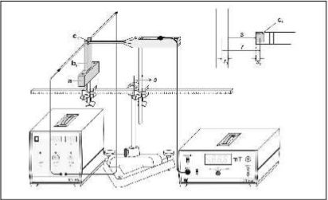
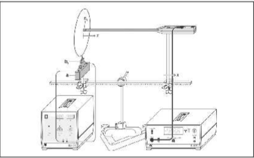

Töğri ötkazgiç va aylanma halqaning magnit maydonini ölçaş
1Işning maqsadi va kutilayotgan natijalar
Töğri ötkazgiç va aylanma halqaning magnit maydonini tok kuçining funksiyasi sifatida ölçaş; töğri ötkazgiç maydonini öqdan masofaning funksiyasi sifatida, aylanma halqa maydonini esa halqa radiusi va halqa öqi böylab markazdan masofaning funksiyasi sifatida ölçaş.
Fan dasturidagi ta’lim natijalari: TN2 — Fizik hodisalarni tajribada namoyiş qiliş, ölçov işlarini bajariş va natijalar aniqligini ta’minlaş; TN5 — Ölçaş natijalarini matematik va grafik qayta işlaş, tizimli va tasodifiy xatoliklarni hisoblaş; TN13 — Tajriba qurilmalarini işçi holatga keltiriş, kalibrlaş va ölçov xatoliklarini kamaytiriş; TN14 — Tajriba ma’lumotlari asosida grafiklar (VAX, rezonans egri çiziqlari va h.k.) çiziş va tahlil qiliş.
2Kerakli jihozlar
- Ötkazgiçlar töplami: töğri ötkazgiç va diametri 40, 80, 120 mm bölgan halqalar
- Teslametr, aksial va tangensial B-zondlar (Xoll datçiklari), köp özakli kabel
- Yuqori tokli manba (20 A gaça)
- Kiçik optik stol (Leybold relsi), ştepsel elementlari tutgiçi, 28 sm li V-şakldagi ştativ
- Ikki yölli adapterlar töplami, 2,5 mm² li ulaş kabellari, 2 ta Leybold köptutgiçi
3Nazariy qism
10.1. Bio–Savar–Laplas qonuni
\(I\) tok ötayotgan ötkazgiç atrofidagi \(P\) nuqtada magnit maydon ötkazgiçning çeksiz kiçik qismlari hosil qilgan maydonlar yiğindisidan iborat:
$$d\vec B=\frac{\mu_0}{4\pi}\,\frac{I}{r^2}\,d\vec s\times\frac{\vec r}{r},\qquad \mu_0=4\pi\cdot10^{-7}\ \frac{\text{V·s}}{\text{A·m}}.\qquad(10.1)$$\(d\vec s\) — ötkazgiç elementining uzunligi va yönalişi, \(\vec r\) — elementdan \(P\) nuqtaga radius-vektor (10.1-rasm). Umumiy maydon integrallaş bilan topiladi; analitik yeçim faqat simmetrik ötkazgiçlar uçun olinadi.


10.2. Töğri tok va aylanma halqa
Çeksiz uzun töğri ötkazgiç öqidan \(r\) masofada:
$$B=\frac{\mu_0}{4\pi}\cdot\frac{2I}{r}=\frac{\mu_0 I}{2\pi r};\qquad(10.2)$$maydon kuç çiziqlari ötkazgiç atrofida konsentrik aylanalar (10.2-rasm). Radiusi \(R\) bölgan aylanma halqaning öqida markazdan \(x\) masofada:
$$B=\frac{\mu_0}{4\pi}\cdot2\pi I\cdot\frac{R^2}{(R^2+x^2)^{3/2}}=\frac{\mu_0 I R^2}{2(R^2+x^2)^{3/2}};\qquad(10.3)$$markazda (\(x=0\)) \(B_0=\mu_0I/(2R)\). Halqa öqida maydon çiziqlari öqqa parallel (10.3-rasm).

10.3. Xoll datçigi bilan ölçaş
Maydon aksial yoki tangensial B-zond yordamida ölçanadi. Zonddagi Xoll datçigi yupqa plastinka bölib, maydonning öz sirtiga perpendikulyar taşkil etuvçisiga sezgir: Xoll kuçlanişi \(U_H\propto IB\). Şuning uçun maydonning nafaqat qiymatini, balki yönalişini ham aniqlaş mumkin.
4Işni bajariş tartibi
a) Töğri ötkazgiçning magnit maydoni (10.4-rasm)
- Kiçik optik stolni ştativga gorizontal holda örnating; ştepsel tutgiçini (a) Leybold köptutgiçiga mahkamlang.
- Töğri ötkazgiç tutgiçini örnatib, ötkazgiçni unga qöying va yuqori tokli manbaga ulang.
- Tangensial B-zondni teslametrga ulang va teslametr nolini örnating (teslametr yöriqnomasiga qarang).
- Zondning çap uçini şkalaning 50,0 sm belgisiga va ötkazgiç örtasining balandligiga töğrilab örnating; ötkazgiçni Xoll datçigiga deyarli tegadigan qilib yaqinlaştiring (\(s=0\)).
- Tok \(I\) ni 0 dan 20 A gaça 2 A qadam bilan oşirib, har safar \(B\) ni yozing.
- \(I=20\) A da zondni qadam-baqadam uzoqlaştirib, \(B\) ni masofaning funksiyasi sifatida ölçang.
b) Aylanma halqaning magnit maydoni (10.5-rasm)
- Töğri ötkazgiç tutgiçini halqa adapteriga almaştiring va diametri 40 mm li halqani örnating; uni ulaş kabellari bilan tutgiç rozetkalariga ulang.
- Aksial B-zondni teslametrga ulang va nolni örnating. Zondni çap uçi 70,0 sm belgisiga töğri keladigan qilib, halqa markaziga töğrilab joylaştiring.
- Tok \(I\) ni 0 dan 20 A gaça 2 A qadam bilan oşirib, halqa markazidagi \(B\) ni yozing.
- \(I=20\) A da zondni çapga va öngga qadam-baqadam siljitib, \(B\) ni öq böylab koordinata \(x\) ning funksiyasi sifatida ölçang.
- 40 mm li halqani 80 mm li, söng 120 mm li halqaga almaştirib, \(B(x)\) ölçaşlarini takrorlang.


10.1-jadval. Maydonning tok kuçiga boğliqligi
| I, A | 0 | 2 | 4 | 6 | 8 | 10 | 12 | 14 | 16 | 18 | 20 |
|---|---|---|---|---|---|---|---|---|---|---|---|
| B (töğri, s = 0), mT | |||||||||||
| B (halqa Ø40, markaz), mT |
Jadval katakçalariga bevosita yoziş mumkin (ma’lumotlar sahifa yopilganda saqlanmaydi — hisobotga köçirib oling).
10.2-jadval. Töğri tok maydonining masofaga boğliqligi (I = 20 A)
| r, mm | B (ölçangan), mT | B = μ₀I/(2πr), mT | B·r, mT·mm |
|---|---|---|---|
Jadval katakçalariga bevosita yoziş mumkin (ma’lumotlar sahifa yopilganda saqlanmaydi — hisobotga köçirib oling).
10.3-jadval. Halqa öqidagi maydon (I = 20 A)
| x, mm | B (Ø40), mT | B (Ø80), mT | B (Ø120), mT | B nazariy (Ø40), mT |
|---|---|---|---|---|
| −60 | ||||
| −40 | ||||
| −20 | ||||
| −10 | ||||
| 0 | ||||
| 10 | ||||
| 20 | ||||
| 40 | ||||
| 60 |
Jadval katakçalariga bevosita yoziş mumkin (ma’lumotlar sahifa yopilganda saqlanmaydi — hisobotga köçirib oling).
5Natijalarni qayta işlaş va xatoliklar
1) \(B(I)\) grafiklari töğri çiziq bölişini tekşiring (\(B\propto I\)).
2) Töğri tok uçun \(B\) ni \(1/r\) ga boğliq çizing: töğri çiziq qiyaligi \(\mu_0I/(2\pi)\) ga teng. \(r\) — ötkazgiç öqidan Xoll datçigigaça masofa: \(r=s+r_0\) (\(r_0\) — ötkazgiç radiusi va zond korpusi hisobiga tuzatma).
3) Halqalar uçun \(B(x)\) ölçangan egri çiziqlarni (10.3) formula bilan soliştiring; markazdagi maydon \(B_0=\mu_0I/(2R)\) radiusga teskari proporsional ekanini (\(B_0R=\text{const}\)) tekşiring.
Xatoliklar nazariyasi: laboratoriyaga kiriş bölimi.
Takroriy ölçaşlar kalkulyatori
Eng kiçik kvadratlar usuli (töğri çiziq y = kx + b)
6Namunaviy hisob
Şart. 1) \(I=5\) A töğri tokdan 1 sm va 4 sm masofadagi induksiya? 2) \(R=5\) sm, \(N=20\), \(I=2\) A halqaning markazi va \(x=5\) sm nuqtasidagi induksiya?
Yeçimni körsatiş
1) \(B=2\cdot10^{-7}\cdot5/0{,}01=1{,}0\cdot10^{-4}\) Tl = 100 mkTl; 4 sm da 25 mkTl. 2) \(B(0)=4\pi\cdot10^{-7}\cdot20\cdot2/(2\cdot0{,}05)=5{,}0\cdot10^{-4}\) Tl = 0,50 mTl; \(x=R\) da \(B=B(0)/2^{3/2}=0{,}18\) mTl.
7Virtual laboratoriya: Töğri tok va halqaning magnit maydoni
- Töğri ötkazgiçdan 5 amper tok ötmoqda. 1 santimetr masofada induksiya 100 mikrotesla.
- Datçikni 4 santimetrga uzoqlaştiramiz. Induksiya 4 marta kamaydi: maydon masofaga teskari proporsional.
- Endi 20 öramli, radiusi 5 santimetr halqa. Markazda induksiya 0,5 millitesla.
- Halqa öqi böylab radiusga teng masofada maydon markazdagining 35 foiziga tuşdi.
- Namoyiş tugadi. Endi parametrlarni özingiz özgartirib, natijalarni jadvalga yozing.
Virtual laboratoriyadagi topşiriqlar
- Töğri tok rejimida \(r\) ni 2 marta oşiring va \(B\) ni soliştiring.
- Halqa rejimida \(x=R\) nuqtadagi induksiya markazdagining neça foizini taşkil qilişini toping.
- Halqa radiusini oşiring: markazdagi maydon qanday özgaradi va nima uçun?
Model öquv maqsadida soddalaştirilgan. “Asbob körsatişi” deb belgilangan qiymatlarga real ölçaşdagi kabi kiçik tasodifiy çetlaniş qöşilgan — takroriy ölçaşlar uçun foydalaning.
8Texnika xavfsizligi
- 5 A tokda ötkazgiç qiziydi — tokni ölçaş vaqtidagina ulang.
- Kuçli tok manbaining çiqişini qisqa tutaştirmang.
- Smartfonni tok ötkazgiçga tegizmang.
9Himoya uçun nazorat savollari
- Bio–Savar–Laplas qonunini ta’riflang.
- Çeksiz uzun töğri tokning magnit maydoni masofaga qanday boğliq?
- Aylanma tok markazida magnit induksiyasi qanday hisoblanadi?
- Xoll datçigining işlaş prinsipi nimaga asoslangan?
- Magnit induksiya çiziqlarining yönalişi qanday qoida yordamida aniqlanadi?
- Aylanma halqa öqi böylab markazdan uzoqlaşgan sari magnit maydon qanday özgaradi?
Mustahkamlaş: Nostandart test: “ha” yoki “yöq”
“Toklarning magnit maydoni va ularning özaro ta’siri” mavzusidagi fikrlarning töğriligini aniqlang: (1) magnit maydon harakatlanayotgan zaryadli zarraga yoki tokli ötkazgiçga ta’sir qiladi; (2) magnit maydon harakatsiz zaryadli zarralarga ta’sir qiladi; (3) magnit maydon induksiya vektori \(\vec B\) bilan xarakterlanadi; (4) har xil magnit qutblari tortişadi, bir xillari itarişadi; (5) harakatlanuvçi zaryadlar atrofida magnit maydon mavjudligini 1820-yilda daniyalik fizik Ersted aniqlagan; (6) magnit maydon kuçlanganligining SI dagi birligi 1 A/m²; (7) turli şakldagi ötkazgiçlardagi tokning magnit maydoni Bio–Savar–Laplas qonuni yordamida örganiladi.
10Nazorat testi (10 savol, öz-özini tekşiriş)
1. \(I=10\) A töğri tokdan 2 sm masofadagi induksiya:
2. Töğri tokdan masofa 3 marta oşsa, induksiya:
3. Halqa markazidagi induksiya formulasi:
4. Halqa öqida \(x\gg R\) da maydon:
5. \(\mu_0\) ning qiymati:
6. Töğri tok maydoni yönalişi qaysi qoida bilan topiladi?
7. Yer maydoni ta’sirini çiqarib taşlaşning eng oddiy usuli:
8. Halqadagi öramlar soni 2 marta oşsa (I özgarmas), markazdagi maydon:
9. Xoll datçigi qaysi hodisaga asoslangan?
10. \(x=R\) nuqtada halqa öqidagi maydon markazdagining:
Bu test öz-özini tekşiriş uçun; rasmiy oraliq nazorat HEMIS’da ötkaziladi.
11Sun’iy intellekt bilan işlaş
Men pedagogika oliygohining fizika yönalişi talabasiman. “Töğri ötkazgiç va aylanma halqaning magnit maydonini ölçaş” laboratoriya işini bajardim. 1) Mening ölçaş jadvalimni tekşir: birliklar, xonalar soni, aniq xato yozuvlar. 2) Natijani qayta işlaş bosqiçlarini tuşuntir (örtaça, Styudent usuli, bilvosita ölçaş xatoligi), lekin hisobni özim bajaraman. 3) Natijam jadval qiymatidan farq qilsa, mumkin bölgan tizimli xatolik manbalarini sanab ber. 4) Himoya uçun 3 ta savol ber. Çeklov: formulalarni LaTeX’da yoz, işonçing komil bölmagan joyni oçiq ayt. [Şu yerga ölçaş jadvalingizni qöying]
12Adabiyotlar
- [2] Toşxonova J.A. va boşq. Fizikadan praktikum. Elektr va magnetizm. — Toşkent, 2006.
- [5] Nurmatov N. Elektr va magnetizm fanidan praktikum. — 2021.
- [1] Orifjonov S. Elektromagnitizm. — Toşkent, 2011.
- Halliday D., Resnick R., Walker J. Fundamentals of Physics. 12th ed. — Hoboken: Wiley, 2021.
- Purcell E.M., Morin D.J. Electricity and Magnetism. 3rd ed. — Cambridge University Press, 2013.
[1]–[5] — fan dasturidagi asosiy, [Q…] — qöşimça adabiyotlar raqamlanişi. Xalqaro darsliklar çuqurlaştiriş uçun tavsiya etiladi.
Öqituvçi uçun: 80 daqiqalik maşğulot rejasi
| Vaqt | Bosqiç | Faoliyat |
|---|---|---|
| 0–10 | Kiriş nazorati (dopusk) | Himoya savollaridan 2–3 tasi; xavfsizlik böyiça yöriqnoma; jurnalga qayd |
| 10–25 | Yiğiş va sozlaş | Zanjir/qurilmani yiğiş, öqituvçi tekşiruvi; jihoz yetişmasa — virtual laboratoriya |
| 25–55 | Ölçaş | Jadvalni töldiriş, takroriy ölçaşlar; virtual model bilan soliştiriş |
| 55–70 | Qayta işlaş | Grafik, eng kiçik kvadratlar, xatoliklar; kalkulyatorlar bilan tekşiriş |
| 70–80 | Himoya | Xulosa, nazorat savollari; DF bali (JN tarkibida) |
Maşğulot: L15 (fan dasturi böyiça). Batafsil: öqituvçi qöllanmasi.